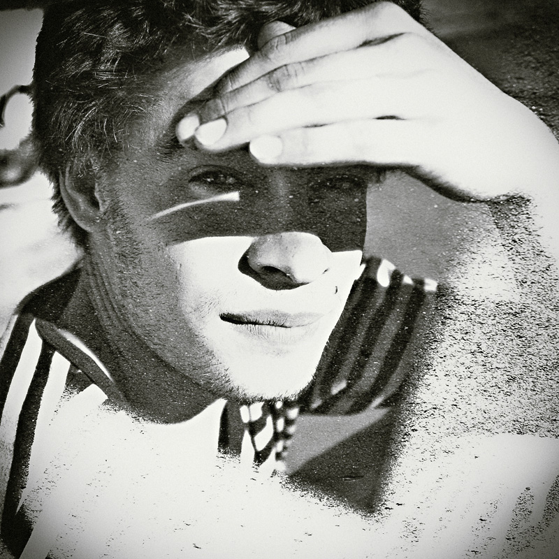

Multiple Exposures
Self taught photographer Christoffer Relander did a fantastic job compositing these multiple exposure film shots.
If you want to learn more about the technique, head over to the Flickr group “A Tale of Two Cities” where film photographers swap rolls of undeveloped film to expose two different cities. If you jump into the discussions you can find technique tips and details.
Another great multiple exposure example by Jon Duenas.